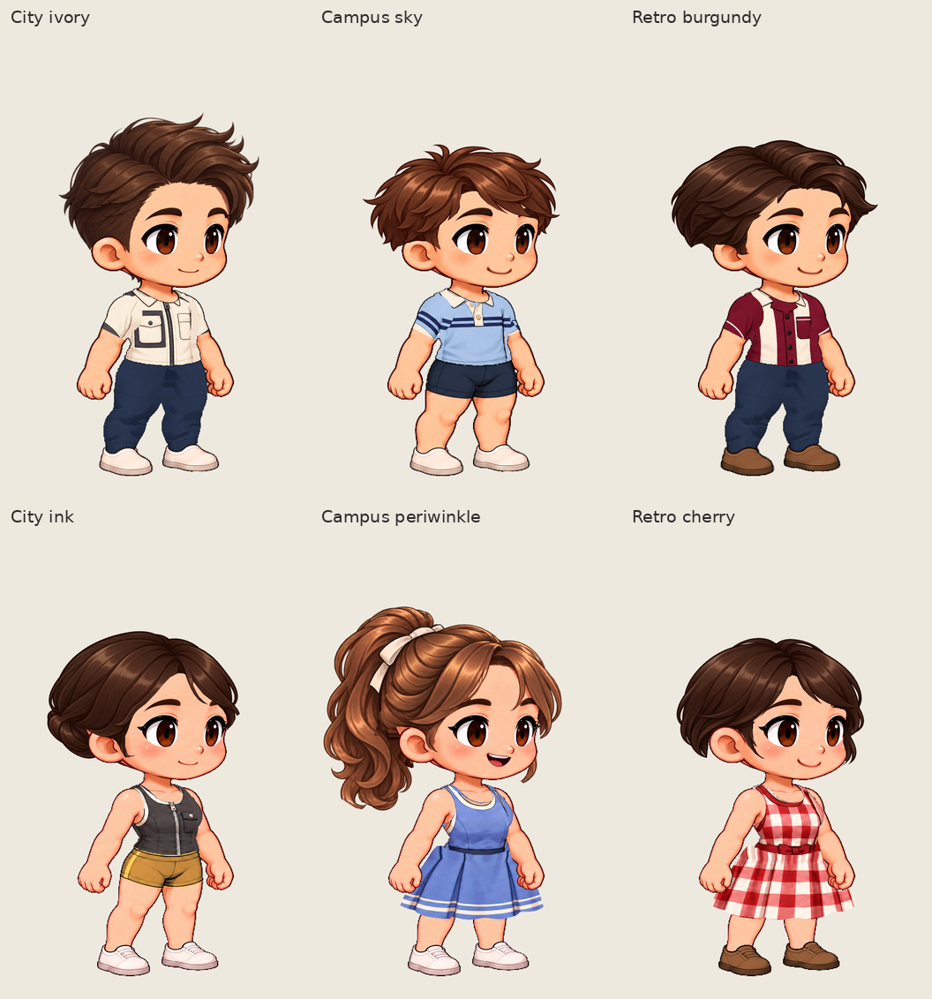
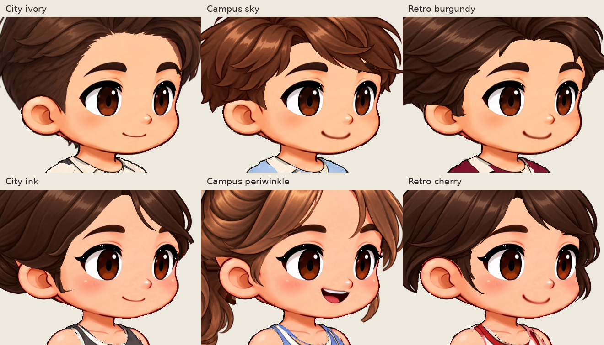
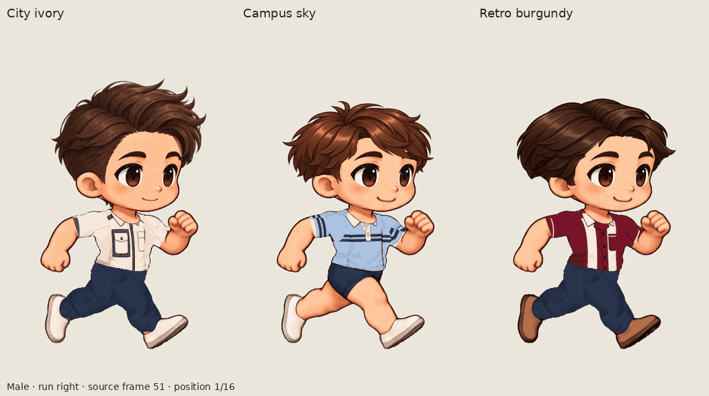
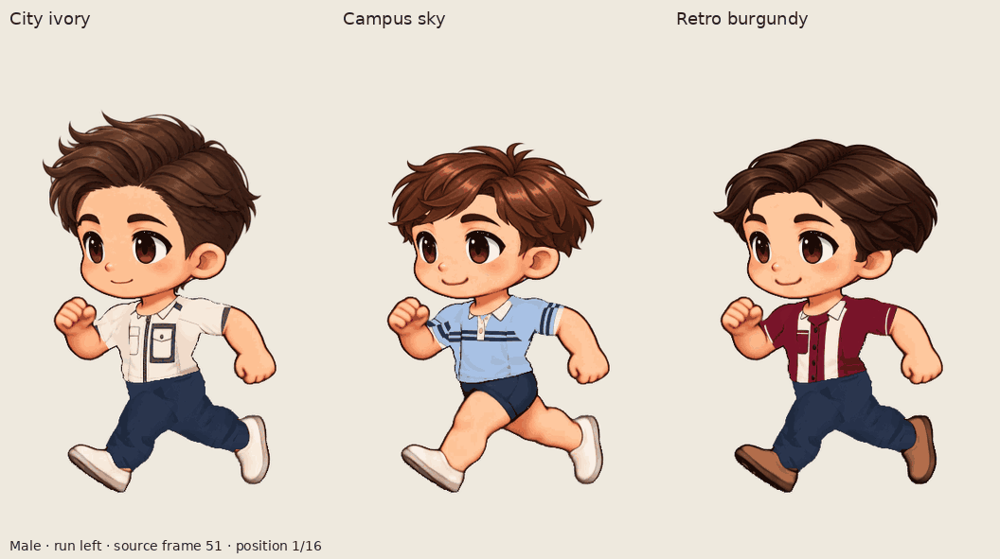
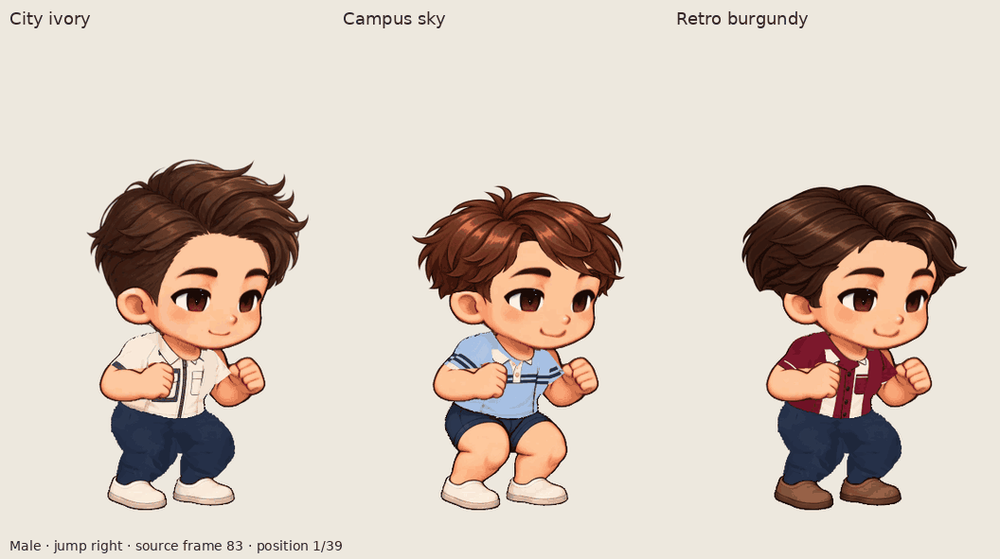
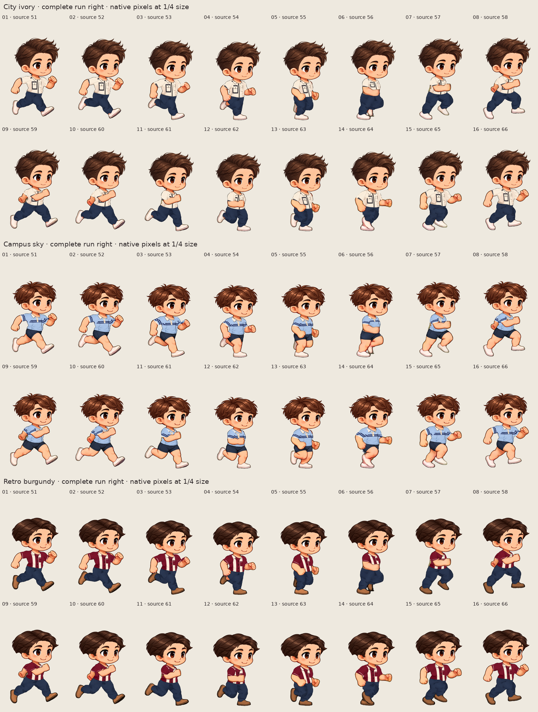
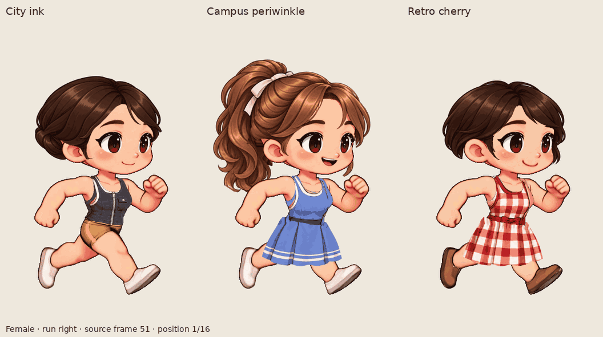
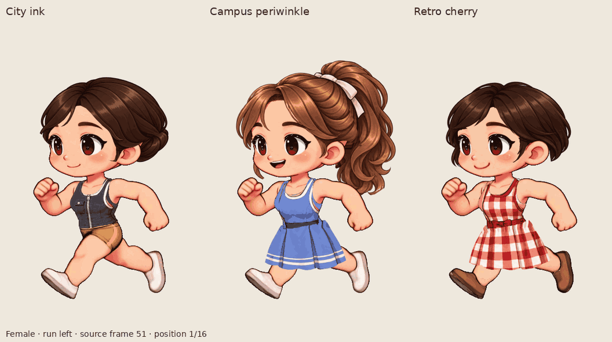
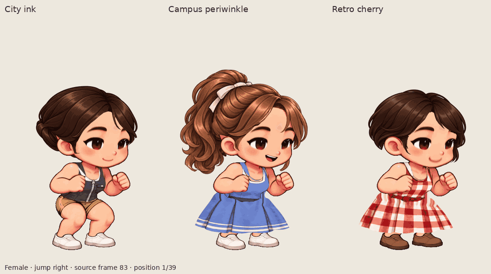
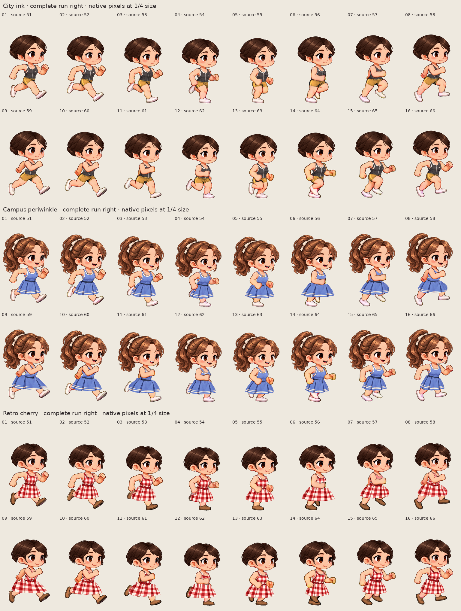

City utility, campus knitwear and retro bowling styles: three directions for each original Kling character. Six new clothing designs use the reviewed motion and clothing cuts. City ivory and City ink retain the original source face option; the campus and retro looks use existing refined expressions.
These boards use completed app downloads. Open the unchanged full-size PNGs, action GIFs and all-action CharacterPacks below for closer inspection. Comparison GIFs retain the downloaded frame order, delays and repeat behavior; jump plays once and can be reopened to replay.

Actual native PNG downloads, alpha composited on a neutral matte and uniformly resized to fit. No pose crop or recentering.
Fixed identical native-coordinate crop of actual PNG downloads; no resizing or face edits.
Actual app GIF pixels arranged together with aspect-preserving resize and one shared 128-color review palette. Original frame order, delays and loop flag are exact; linked originals retain unchanged bytes.male-city-ivory-run-right.gif · male-campus-sky-run-right.gif · male-retro-burgundy-run-right.gif

Actual app GIF pixels arranged together with aspect-preserving resize and one shared 128-color review palette. Original frame order, delays and loop flag are exact; linked originals retain unchanged bytes.male-city-ivory-run-left.gif · male-campus-sky-run-left.gif · male-retro-burgundy-run-left.gif

Actual app GIF pixels arranged together with aspect-preserving resize and one shared 128-color review palette. Original frame order, delays and loop flag are exact; linked originals retain unchanged bytes.male-city-ivory-jump-right.gif · male-campus-sky-jump-right.gif · male-retro-burgundy-jump-right.gif

Every run-frame occurrence extracted from actual verified CharacterPacks, in source order, at exact quarter size. Fixed native canvas and source coordinates; no pose recentering or synthesized in-between frames.male-city-ivory.character.zip · male-campus-sky.character.zip · male-retro-burgundy.character.zip

Actual app GIF pixels arranged together with aspect-preserving resize and one shared 128-color review palette. Original frame order, delays and loop flag are exact; linked originals retain unchanged bytes.female-city-ink-run-right.gif · female-campus-periwinkle-run-right.gif · female-retro-cherry-run-right.gif

Actual app GIF pixels arranged together with aspect-preserving resize and one shared 128-color review palette. Original frame order, delays and loop flag are exact; linked originals retain unchanged bytes.female-city-ink-run-left.gif · female-campus-periwinkle-run-left.gif · female-retro-cherry-run-left.gif

Actual app GIF pixels arranged together with aspect-preserving resize and one shared 128-color review palette. Original frame order, delays and loop flag are exact; linked originals retain unchanged bytes.female-city-ink-jump-right.gif · female-campus-periwinkle-jump-right.gif · female-retro-cherry-jump-right.gif

Every run-frame occurrence extracted from actual verified CharacterPacks, in source order, at exact quarter size. Fixed native canvas and source coordinates; no pose recentering or synthesized in-between frames.female-city-ink.character.zip · female-campus-periwinkle.character.zip · female-retro-cherry.character.zip
Review provenance · Independent verification · Capture evidence index
Male capture · Female capture
Two independent capture timelines are retained. Each capture closed its own editors before its own player checks; no ordering across the two captures is asserted.